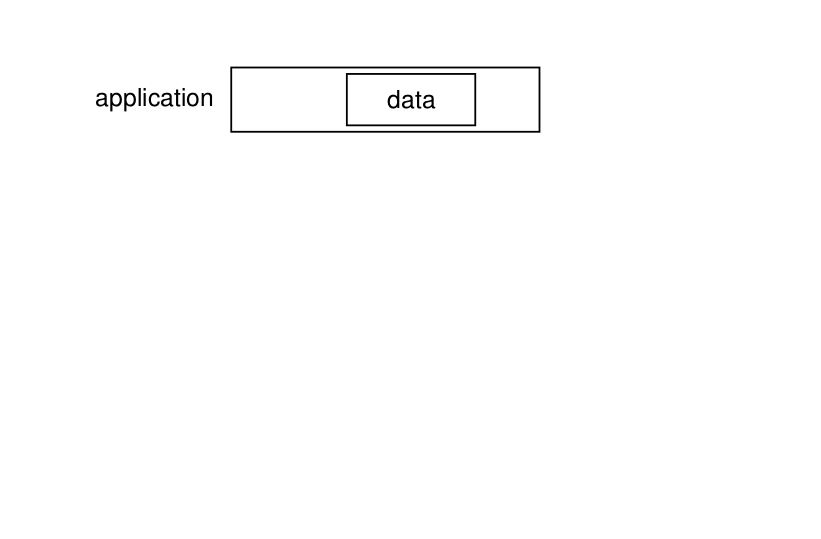

Encapsulation
Lors du voyage du paquet entre la couche application : par exemple, la requête GET d'une page HTML et son arrivée sur le medium physique, celui-ci traversera ces quatre couches dont nous venons de parler. Lors de cette traversée, chaque couche va ajouter un en-tête avec des informations protocolaires qui lui sont propres (comme représenté par l'animation ci-dessous). La couche transport va ajouter le numéro de port (service) dans un en-tête fournit par le protocole de transport qui sera utilisé (TCP, UDP, ...) puis le transmettre à la couche réseau pour adressage et ainsi de suite avec les couches qui suivent. On dir que chaque couche va encapsuler les données de la couche supérieure. Une capture de paquet vous permet alors de décapsuler cet ensemble en affichant les en-têtes ajoutés par chacune de ces couches.
